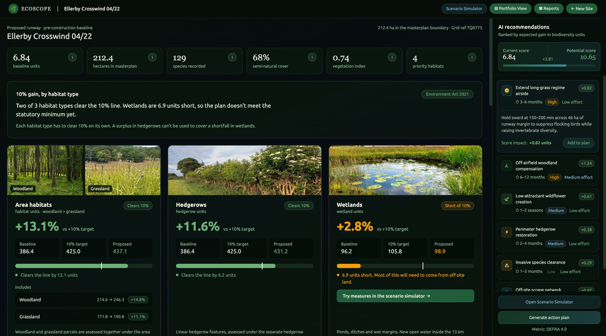
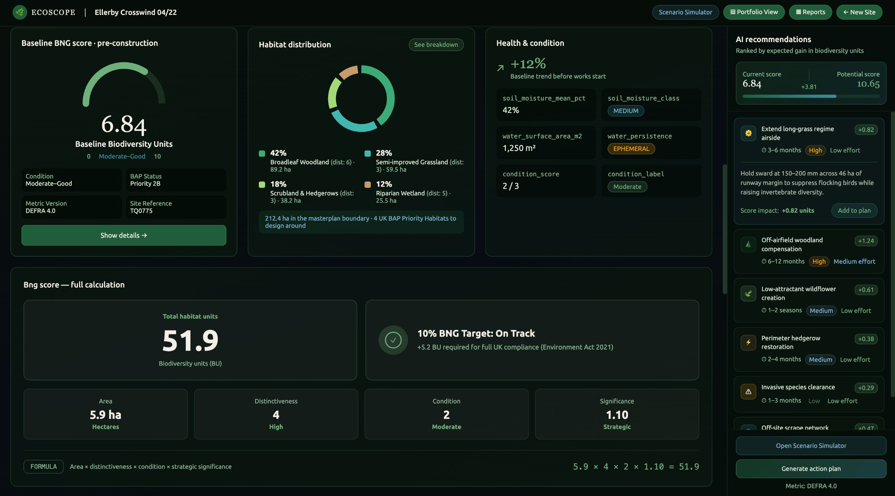
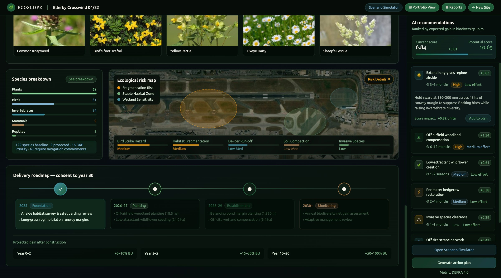

01Show how every number was reached
A single headline score, which looks confident but explains nothing is a score no one will believe. The working is how the tool gains trust in a regulated environment.
A biodiversity monitoring platform that turns messy ecological survey data into insights on habitat health.



UK law requires developers to prove a biodiversity net gain of at least 10% and maintain it for 30 years. Biodiversity net gain requires that a site end up measurable richer in habitat value than it started, and that improvement has to be monitored and defended over years. The government guidance requires evidence for net gain and a Biodiversity Gain Plan to be submitted with the proposals for approval.
Our client, an airport client in the UK, is planning to build a new runway to increase its flying capacity. However, before they can the Secretary of state must be satisfied that the project will deliver at least 10% net gain.
I collaboratively conducted a problem discovery session with the client stakeholders to understand what the key challenges were.
The 10% applies separately to area habitats, hedgerows and watercourses, and a gain in one cannot make up for the loss in another.
Near an airfield, ponds, wetlands and berry rich shrubs can attract birds that may strike the aircraft. Planning the habitat further away may reduce risk, but the metric values distant gain less.
The examining authority and the airport board will judge the work by the evidence that reaches them.
The runway is one of the several sites where the airport has net gain commitments and each site must stay on track for decades
The airport needed to prove a 10% gain it could defend, using habitat that wouldn't put aircrafts at risk, and keep every site on track for decades
EcoScope is a biodiversity monitoring web platform that helps make sense of messy ecological data. It leverages AI agents to read survey data and satellite imagery, classify habitats and run DEFRA's statutory metric, showing their working as they go.
For the airport, every habitat it proposes is also screened for wildlife hazard before anyone can choose it.
A single headline score, which looks confident but explains nothing is a score no one will believe. The working is how the tool gains trust in a regulated environment.
Design the export for the people who never log in but are the real decision makers. The Examining Authority, Natural England and airport's board will judge this work by the reports provided to them and each reads it for differently. The tool must provide customised reports for each user.
Let the team test the trade offs before committing. A simulator that lets users pick from the recommended measures and simulates the impact and risks associated. Gains take into account the distance from the site while measuring the impact.
A view to see all sites together, to maintain for 30 years. Each airport site must maintain the net gain for 30 years and its on track, needs review or at risk status must be monitored.
As the sole designer on this project, I collaborated with the account team and the product manager to conduct the discovery session with client stakeholders and understand the as is state. I then worked on shaping the final solution, defining the user flows and designing the final dashboard for the project.